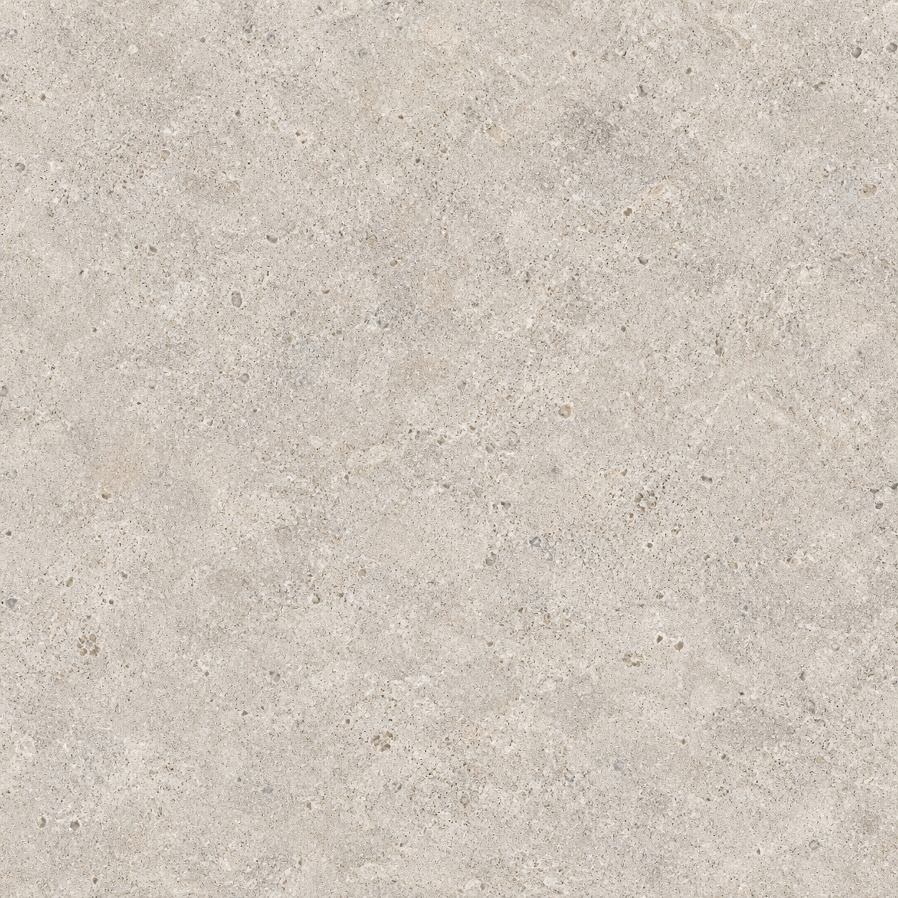
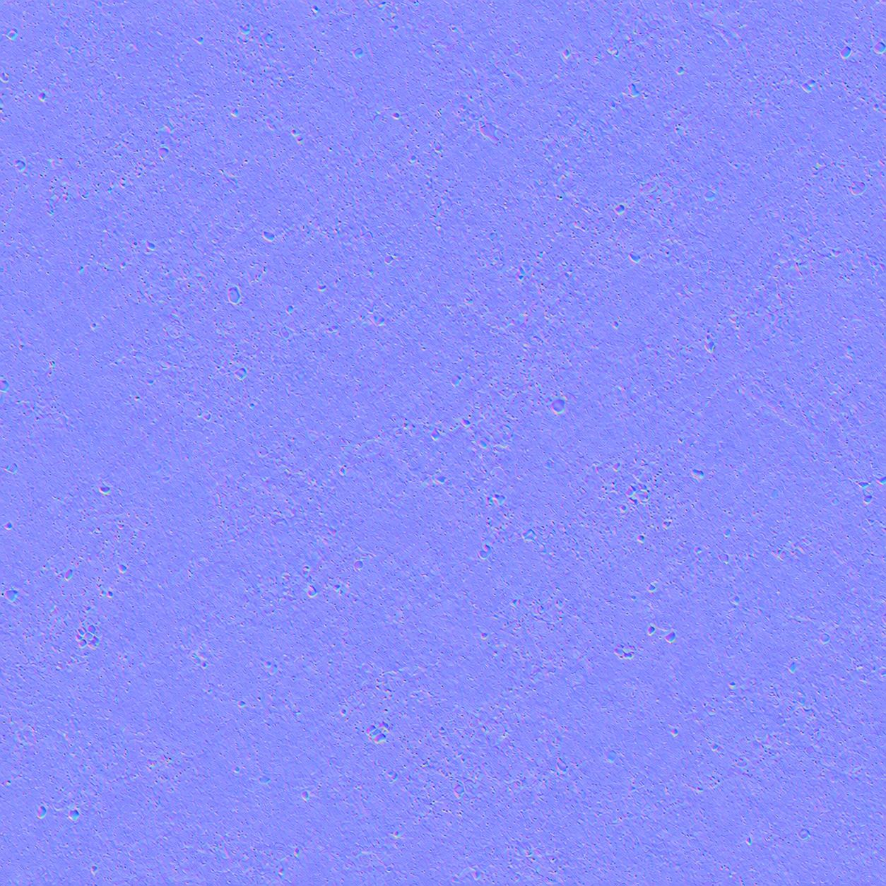
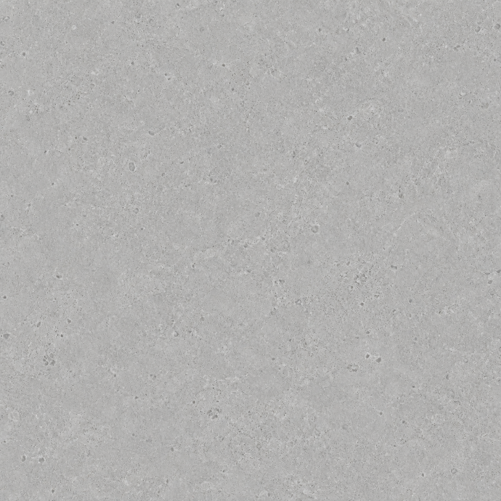
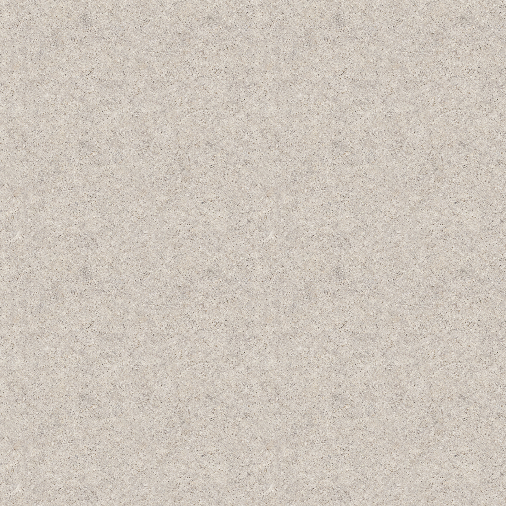
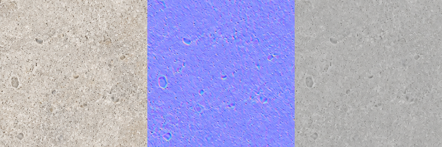

1254 × 1254 native · 1 × 1 m · ei suurennosta
Arvioerä: normaali- ja karheuskartan tekninen QA on avoin. Tämä ei ole hyväksytty PBR-materiaali.
QA-raportti · QA JSON · Kaikki promptit

50 % / 50 % offset



